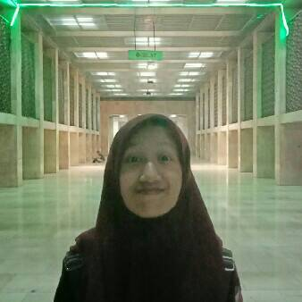
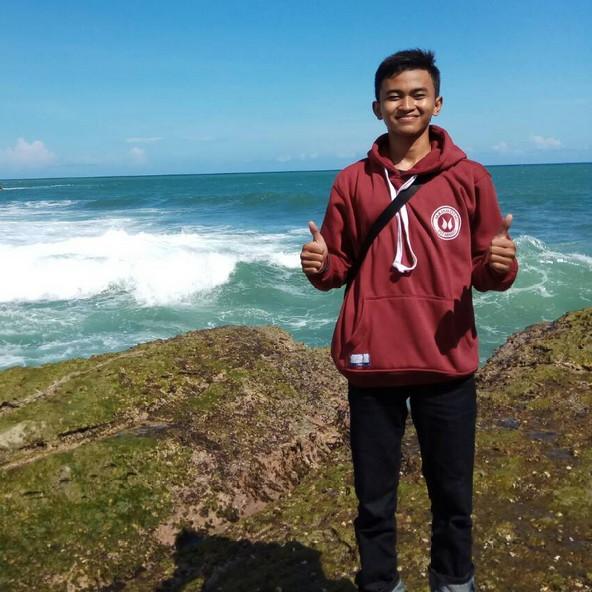
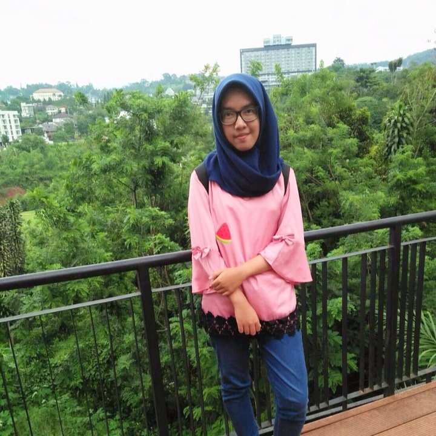

Team

Harun
Website
"Hidup berarti untuk berbagi"

Hisanah Salsabila
Website
"Jadilah seseorang yang menginspirasi"

Ario sutrisno
Website
"Tidak akan pernah sampai akhir"
Ilham Saiful Azis
Website
"Halalan Toyyiban"
Muhammad Alfis
Website
"صَلَّى اللَّهُ عَلَى مُحَمَّد"
Fathur Rahman Haikal
Android
"ibu-ibu make konde,ada cacing didalam sardeng"
Rizkiya Febri
Android
"i"ll not stay on the ground,pick it up""
Ilham Dwi Pratama S
Android
"knowing for owning"
Bung Gilang
Mograph
"Pergilah ke tempat dimana kamu dihargai"

Alia Ismayanti
Mograph
"Belajar dari sebuah kegagalan"